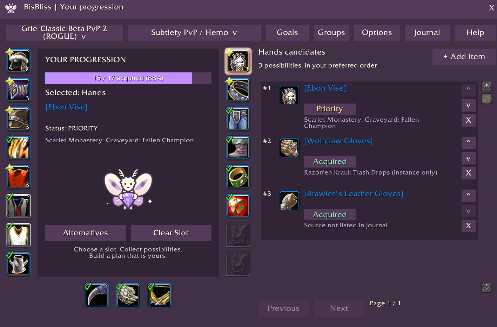

A plan of your own
Your goals. Your pace.
Keep gear wishlists for your characters and specs. Make room for every little victory along the way.
A new home is on the way
A little companion for your next big upgrade. Plan your gear, explore possibilities, and find more reasons to adventure together in WoW Forever.
Our website is taking shape. Something good is gathering.

A plan of your own
Keep gear wishlists for your characters and specs. Make room for every little victory along the way.
A little discovery
Explore relevant gear alternatives and choose what belongs in your plan. The next step is always yours.
A shared adventure
Find the dungeons and bosses that bring your guild’s goals together. Make progress with a little company.
A peek inside
Your wishlist, priorities, and progress—together in game. Here’s a first look at BisBliss in action.
